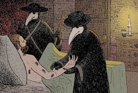

A Peste Negra também conhecida como Peste Bubônica, foi uma pandemia devastadora que ocore entre os anos 1347 a 1351.
Originária da Ásia Central, a doença se espalhou pela Europa através de rotas comerciais e navios infectados por pulgas que viviam em ratos.

Se a Peste Negra tivesse um surto hoje em dia ela não teria o mesmo número de óbitos, porque daquela época até agora o mundo inteiro teve um avanço imenço em relação a medicina e a comunicação